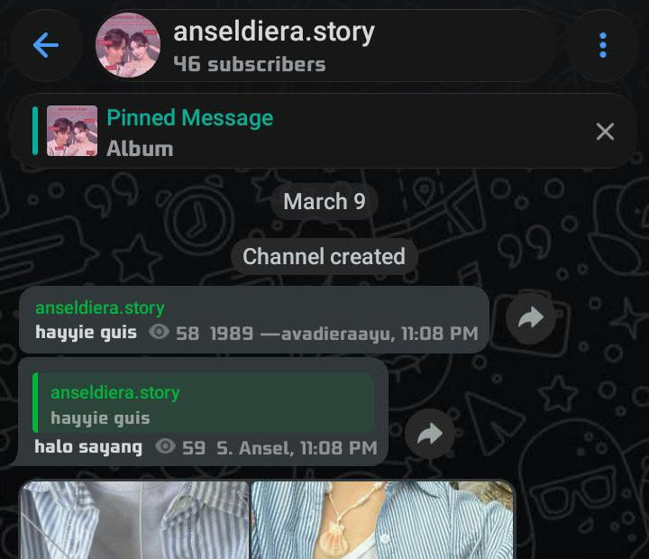
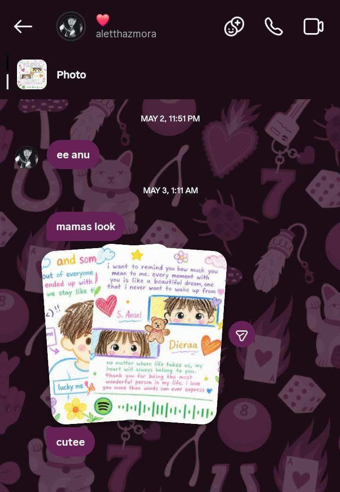

the beginning
awal perkenalan kita
semuanya dimulai dari Telegram sebuah percakapan sederhana yang akhirnya menjadi awal dari banyak cerita yang tidak pernah aku duga.

our first conversation
a little something for
ada beberapa cerita yang ingin aku simpan, dan kali ini aku ingin mengajakmu melihatnya.
made with a little love
where it all began
semua cerita punya awal, dan ini adalah awal cerita kita.
the beginning
semuanya dimulai dari Telegram sebuah percakapan sederhana yang akhirnya menjadi awal dari banyak cerita yang tidak pernah aku duga.

our first conversation
a little closer
setelah itu, kita berpindah ke Instagram. dari sana, percakapan kita terus berlanjut dan perlahan semakin banyak hal yang kita ketahui satu sama lain.

another little memory
our story continues
dari dua aplikasi sederhana, kita mulai punya cerita sendiri. mungkin masih banyak halaman yang belum tertulis, tetapi aku senang karena cerita ini pernah dimulai.
little pieces of us
beberapa potongan kecil yang ingin aku simpan lebih lama

little moment one

my favorite memory

just the two of us

a day to remember

one of my favorites

and many more
a letter for you
a little letter, just for you
Hai, Dieraa.
ada banyak hal yang mungkin tidak selalu bisa aku sampaikan secara langsung. kadang, hal-hal sederhana justru menjadi sesuatu yang paling sulit untuk diungkapkan dengan kata-kata.
aku ingin kamu tahu bahwa kehadiranmu menjadi salah satu bagian yang berarti dalam hari-hariku. dari percakapan sederhana sampai cerita-cerita kecil yang mungkin terlihat biasa, semuanya punya tempat tersendiri untuk aku ingat.
kita mungkin masih punya banyak hal untuk dipelajari, banyak cerita untuk dilewati, dan banyak halaman yang belum sempat kita tulis. aku tidak berharap semuanya selalu sempurna. Aku hanya berharap kita bisa terus saling memahami dan menghargai setiap prosesnya.
terima kasih sudah menjadi bagian dari cerita ini. semoga hal-hal baik selalu menemukan jalan untuk sampai kepadamu.
dengan segala hal baik yang ingin kusampaikan,
songs we keep
kumpulan lagu yang bisa menemani cerita kita
every day matters
setiap hari punya ceritanya sendiri.
since the day we started
09 Mei 2026